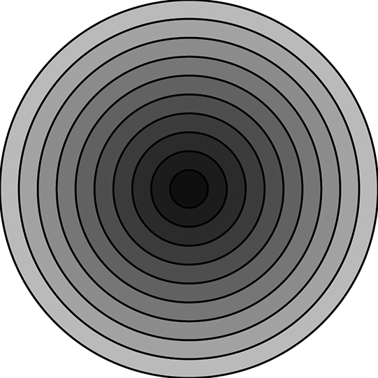
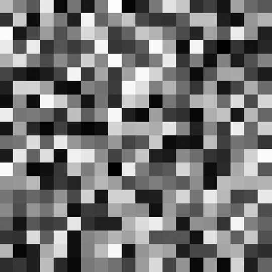

1. Consider a grading system where numbers are turned into letters. Fill in the blanks in the following code to complete the boolean expression.
2. Move a rectangle across a window by incrementing a variable. Start the shape at x coordinate 0 and use an if statement to have it stop at coordinate 100. Rewrite the sketch to use constrain() instead of the if statement. Fill in the missing code.
3. Write a program that implements the above rollover. In other words, if the mouse is over a rectangle, the rectangle changes color. Here is some code to get you started. (How might you do this for a circle?)
Recreate the above sketch so that the squares fade from white to black when the mouse leaves their area. Hint: you need four variables, one for each rectangle’s color.
 Recreate the above image with a for loop.
 Recreate the above image with a nested loop.